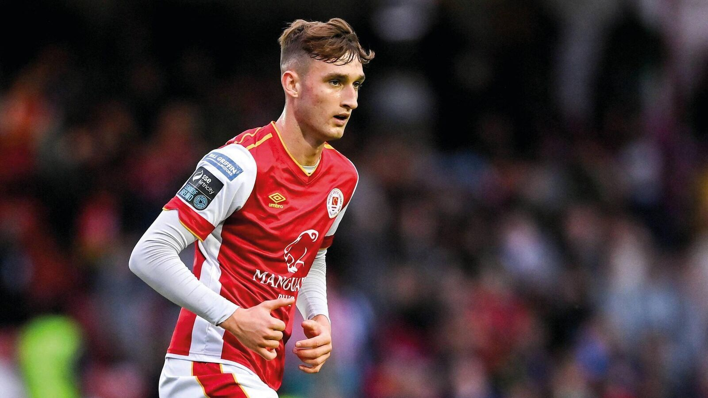
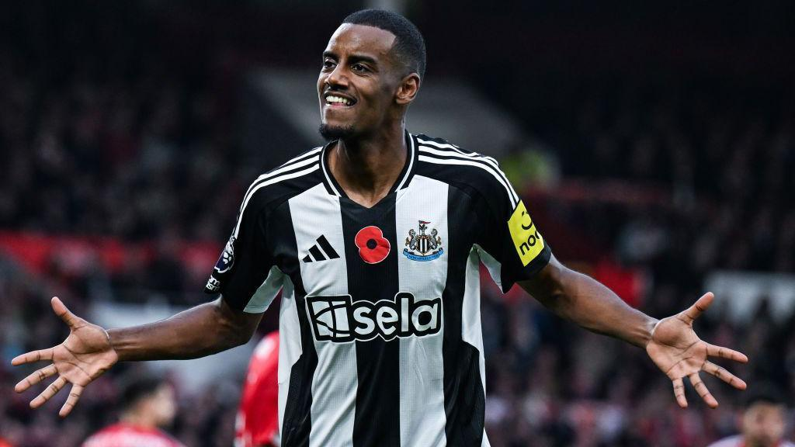

Transfer Centre LIVE! Football transfers, news, updates and rumours

Slot facing seismic summer rebuild at champions-elect Liverpool Read More
Who is record-breaking Spurs signing Mason Melia?
Mason Melia may not have been the name on the radar for football fans this transfer deadline day, but his £1.6m signing for Tottenham on Tuesday has definitely got people talking. Read More
Liverpool make contact over Isak - Tuesday's gossip
Liverpool make contact over Alexander Isak, Wolves eye sensational return for Diogo Jota and Manchester United want more money for Marcus Rashford. Read More